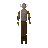

Barbarian guard

| Config name | barbarian_guard |
| NPC id | 197 |
| Combat level | 8 |
| Hitpoints | 14 |
| Attack / Strength / Defence | 6 / 6 / 6 |
| Options | Attack |
| Wander range | 5 tiles from spawn |
| Max range | 7 tiles from spawn |
| Area folder | area_barbarian_outpost |
| Defined in | scripts/areas/area_barbarian_outpost/configs/barbarian_outpost.npc |
| Bonuses | Attack bonus 8, Strength bonus 13, Stab def 14, Slash def 18, Crush def 15, Magic def -4, Range def 22 |
Barbarian guard
Not very civilised looking.
Drops
No drops recorded.
Locations
This NPC is not placed on the map by the map files (it may be spawned by scripts, e.g. during quests, or be a variant).